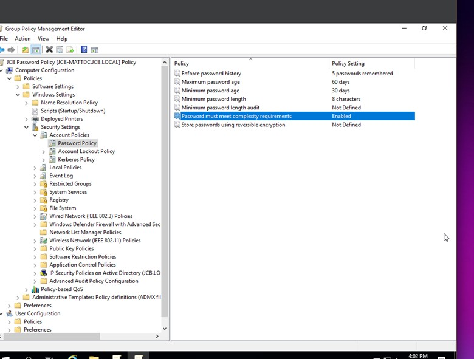
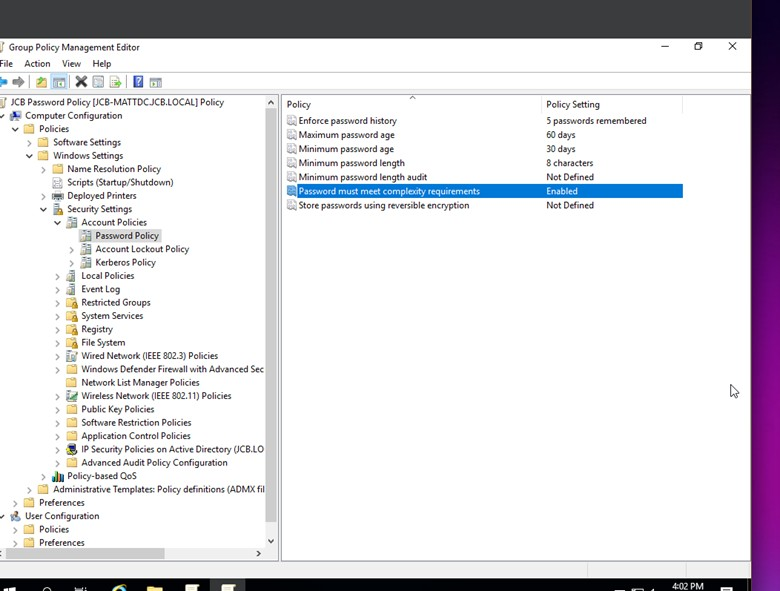

Project Summary: Installed and configured Windows Server 2019 on a virtual machine using Oracle VirtualBox. Promoted the server to a Domain Controller, created user accounts and groups using Active Directory, and tested domain login functionality.
Hands-on experience with installing and managing Windows Server, using Active Directory to manage user accounts, and configuring domain environments in a virtual lab setting.
 
